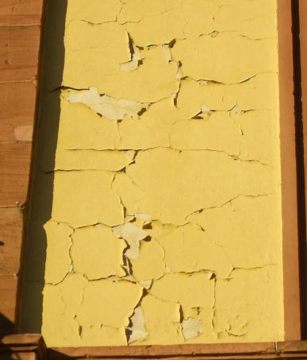
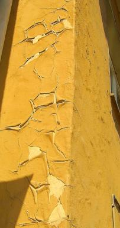

Altbautaugliche Verfahren und
Baustoffe
Altbautaugliche Verfahren und
Baustoffe"Zum Unglück hat sich mit der Industrie ein System verbunden,
das Profit als den eigentlichen Motor des gesellschaftlichen Fortschritts betrachtet,
den Wettbewerb als das oberste Gesetz der Wirtschaft,
Eigentum an den Produktionsgütern als absolutes Recht,
ohne Schranken,
ohne entsprechende Verpflichtung der Gesellschaft gegenüber.
[...]
Noch einmal sei feierlich daran erinnert,
dass Wirtschaft im Dienst des Menschen steht."
Papst Paul
IV.
(in seiner Enzyklika über den Fortschritt der Völker
- POPULORUM PROGRESSIO - Volltext deutsch )
Das Bild zum Thema: Frans Francken - Der Tod und der Kaufmann (1620)
Baustoffseite
Luftkalkmörtel für die verschiedenen Bauaufgaben
Praxis-Ratgeber: Die erhaltende Instandsetzung von historischen Putzfassaden
Neu: Krachende Schwarten? Ein kritischer Blick auf Mörtel, Putz und Anstriche am Baudenkmal
Kalkputz und Mörtel am Baudenkmal
Kalkputz und Mörtel am Baudenkmal. Fallbeispiele aus der Sicht des Architekten - Vortragstext bei EUROLIME, Mainz 1998
Luftkalkmörtel und seine aktuelle Vergütungspraxis - mit Volldeklaration und vielen technischen Untersuchungsergebnissen
Die häufigsten Schadensursachen bei Kalkmörteln
Anstrich auf Kalkmörtel
Technische Informationen Kalk-Tünche
Sanierputz



Immer wieder geht es bei alten Fassaden und Innenräumen um die Frage, ob es technisch, denkmalpflegerisch und wirtschaftlich sinnvoll ist, den Bestand an historischen Putzen zu erhalten. Sie erhalten hier und bei den o.g. Links wertvolle Hinweise und freche Tipps aus der Praxis. Frank und frei, es kostet Sie höchstens Ihre Zeit und Nerven. Vielleicht lohnt es sich? Und um sich woanders schlau zu machen, können Sie auch hier mal drücken: Ratgeber und Info zu Maler, Lackierer, Rauhfaser, Rauhfasertapete, Farben, Wandfarben, Schimmel, Schimmelbefall, Schimmelpilz, Pinsel, Pinselarten.
Praxis Ratgeber: Die erhaltende Instandsetzung von historischen Putzen. (Beirat für Denkmalerhaltung der Deutschen Burgenvereinigung e.V.)
RILEM-Workshop University of Paisley, Scotland, 12.-15. Mai 1999
"Characterisation of old mortars with respect to their repair"
Dipl.-Ing. Konrad Fischer: Traditional craftsmanship in modern mortars - does it work in practice?
Tradition & byggproduktion, kunskap och material - Baustoffwissen der schwedischen Denkmalpflege. Benützen Sie zum besseren Verständnis das Übersetzungsprogramm im Internet - Go Translator
Forschungsprojekt Historische Putze und Mörtel in Brandenburg
Die erhaltende Instandsetzung - Praktische Hinweise mit vielen Abbildungen und Planauszügen
Prof. Oskar Emmeneggers detailreiche Vorträge und Publikationen zu Restaurierungsfragen, zu historischer Maltechnik und Problemen/Schadensrisiken von Mineralfarbenmalereien
Historische Techniken - Ausführliche Fachinformationen von Karl J. Kaiser im WEB
Kalk/Stuck/Fachwerk - www.stuck-kalk.de - Info von Restaurator Wolfgang Kenter
Prof. Dr. Ivo Hammer: DIE MALTRÄTIERTE HAUT, Anmerkungen zur Behandlung verputzter Architekturoberfläche in der Denkmalpflege, Roland Möller zu Ehren: Dresden 1995 (Ein praxisnaher Beitrag auch zur Problematik von Wunderbaustoffen an der Fassade)
Vor allem im Inneren historischer Gebäude stellt sich im Modernisierungsfall die Frage nach dem Umgang mit den alten Putzflächen. Der mindestsatzunterschreitende Planer und der nicht weniger raffinierte Handwerksberater kennen immer nur eine - die kostenverursachenste - Antwort: Neue Leitungstrassen werden in die Wand- und Deckenoberflächen eingeschlitzt, der mehr oder weniger leidensfähige Putz dabei meist abgeklopft. Ergebnis: Dreck und Staub, Honorar- und Baukostenmaximierung, Verlust der historischen Fassungen/Raumschalen. Auf unseren Baustellen wird dagegen seit den 50er Jahren dagegen die traditionelle Praxis weiterverfolgt: Entweder geschickte Leitungstrassierung, ggf. auf Putz und lokale Reparatur mit geeigneten Mörtelsystemen oder: Mit Rohrmatten werden die Altputzflächen nach Aufputzverlegung der Kabeltrassen überspannt und danach mit Luftkalk- oder Kalkgipsmörtel verputzt. Auf weichen bzw. wenig tragfähigen Untergründen wie Lehmgefache haben sich entsprechend lange Wärmedämmdübel zur Befestigung der Rohrmatten bewährt, ansonsten genügen "Heraklitnägel" oder Krampen.
Aber Vorsicht, hydraulische, mit wasserrückhaltender Methylzellulose, hydrophobierten und versagensanfälligen Luftporenbildnern versehene Werktrockenmörtel bergen wie auf allen wenigfesten Untergründen auch bei Rohrmatten ein großes Schadenspotential: